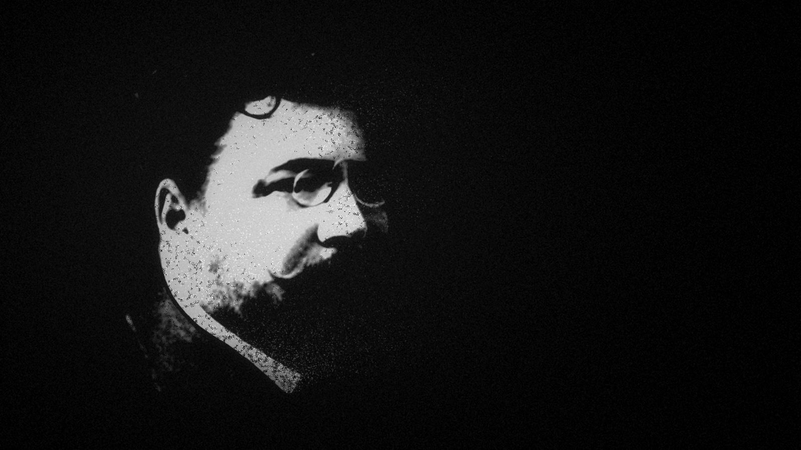

Gaston Leroux
Licencié en droit, grand reporter, romancier : l’homme qui a écrit Le Fantôme de l’Opéra.
Texte provisoire – exemple. Le texte définitif viendra de la famille Leroux.
Une vie, en quelques dates
- 6 mai 1868
Naissance à Paris.
- 1890
Licencié en droit.
- 1894
Chef des informations au journal Le Matin.
- 1904 – 1906
Envoyé spécial permanent du Matin en Russie.
- 1907
Après un échec au théâtre, il se tourne vers le roman : Le Mystère de la chambre jaune paraît en feuilleton dans L’Illustration, puis en volume en 1908.
- 1910
Le Fantôme de l’Opéra paraît en feuilleton dans Le Gaulois, puis en volume chez Pierre Lafitte.
- 15 avril 1927
Il meurt à Nice.
- 2027
Cent ans plus tard : LEROUX100.

Les souvenirs de la famille
Ces pages sont réservées aux souvenirs, aux documents et aux photographies que la famille de Gaston Leroux voudra bien partager. Rien n’y sera publié sans son accord.